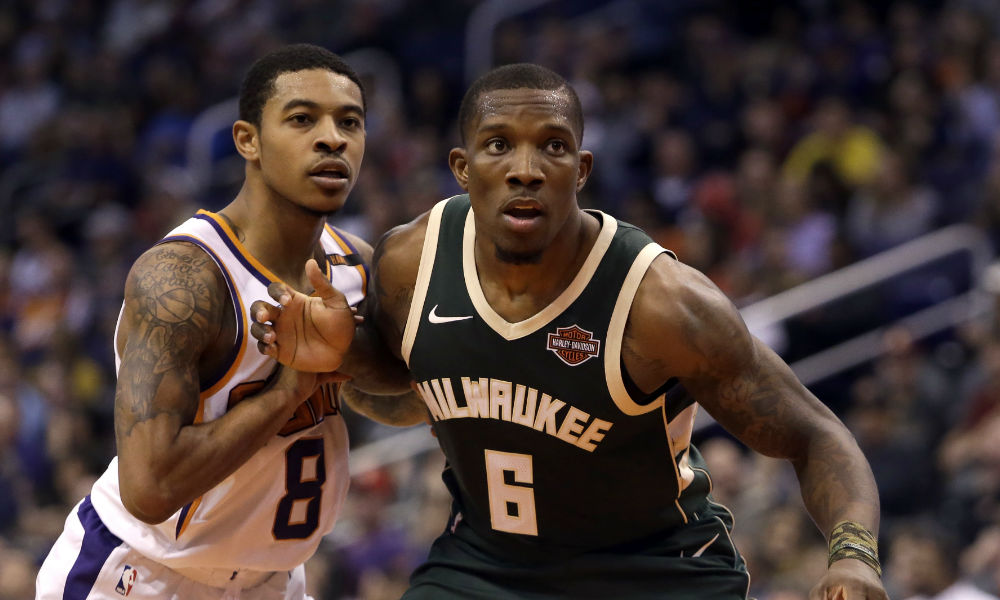
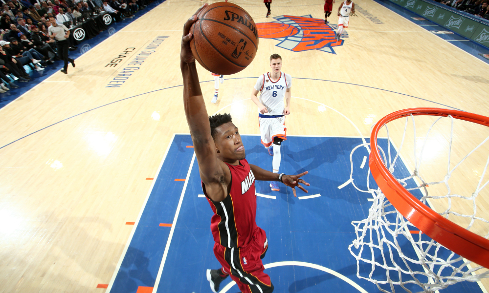
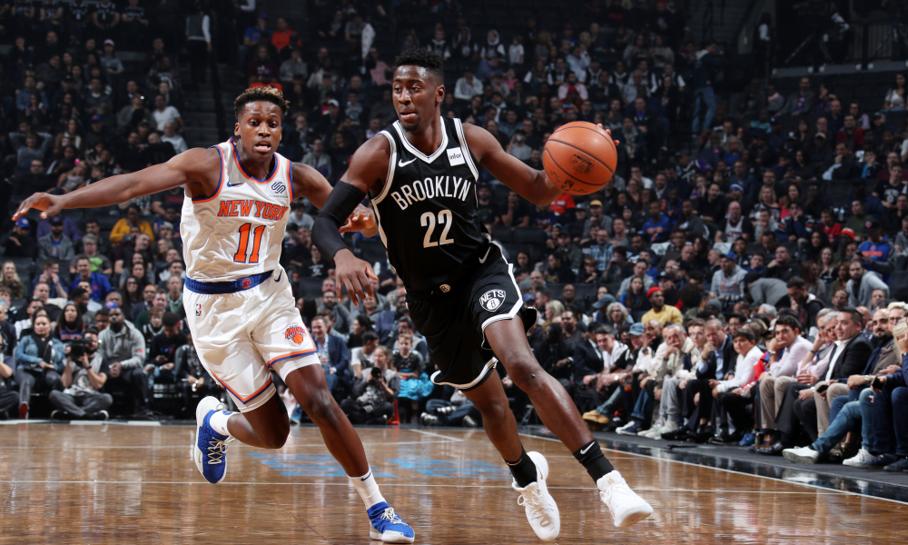

Game 1: New York Knicks at Toronto Raptors
My Pick:
Toronto Raptors
Why I'm Rolling with them:
The Knicks have been better than I was expecting this year, laregely in part to the performance of their younger players. Robinson is a lot of fun to watch, and I'm excited to see how he develops. But this Raptors team is far better, far deeper, and has Kawhi and OG to lock up Hardaway Jr, who has been the main producer for this Knicks team. Raptors win this one, 117-106.
Game 2: Milwaukee Bucks at Los Angeles Clippers
My Pick:
Milwaukee Bucks
Why I'm Rolling with them:
The Bucks keep proving that they're for real. They just demolished the top team in the league with the Warriors, and should have no problem against this weaker Clippers team. Harris is a good player, but he will struggle to contain Giannis. When Boban is on the floor, the Bucks will be able to exploit mismatches there, due to having a perimeter center like Lopez. The Bucks are the better team, and it'll show today. Bucks, 120-112.
 Bledsoe has looked a lot better for the Bucks this year.Game 3: Phoenix Suns at New Orleans Pelicans
My Pick:
New Orleans Pelicans
Why I'm Rolling with them:
The Suns almost stole a game off of Boston this year, but ended up falling short in OT. This Pelicans team is primed to abuse the Suns in the paint, where Ayton will have to contend with players like AD and Randle. Holiday will be a tough matchup for Booker, and beyond those 2 Phoenix players there isn't a whole lot of talent. TJ Warren will produce well off of the bench, but that won't be enough as the Pelicans take it 119-110.
Game 4: Cleveland Cavaliers at Chicago Bulls
My Pick:
Chicago Bulls
Why I'm Rolling with them:
Cleveland has looked pretty awful lately, and I don't see much changing soon. George Hill is out, meaning Sexton will have to start and while I like him more than most, I think he'll be outmatched against this Bulls offense. LaVine should have a good game, as the Bulls win this one pretty easily, 105-90.
Game 5: Washington Wizards at Miami Heat
My Pick:
Miami Heat
Why I'm Rolling with them:
Both of these teams played yesterday, but only one of them lost to the Magic. The Wizards are a dysfunctional team, that shows no effort on either end of the court. I'm excited to see the Heat and what they can do against this weaker Washington team. At the rate the Wizards are at, they're going to miss the playoffs by a landslide. Richardson will have a good game as the Heat steamroll the Wizards, 116-108.
 Josh Richardson is leading this Miami teamGame 6: Philadelphia 76ers at Memphis Grizzlies
My Pick:
Philadelphia 76ers
Why I'm Rolling with them:
Fun Fact about Philadelphia: They just traded for Jimmy Butler. This 76ers team is now back into the upper echelon of teams in the east, and considering you could make the argument that the top 4 teams in the east (Raps, Bucks, Celtics, 76ers) are top 5 teams in the league, the top of the east is looking very scary. Butler will help them tonight, as they win 117-107.
Game 7: Houston Rockets at San Antonio Spurs
My Pick:
San Antonio Spurs
Why I'm Rolling with them:
The Rockets haven't looked great lately. Chris Paul looks like he's just a step slow compared to last season, and the Rocket's defense has been poor. Relying on 3's doesn't work as well when you lose your 3 point shooters, and Harden can't carry the offensive load himself. Their defense won't be good enough to stop DeRozan and Aldrige from wreaking havoc. San Antonio 115-105.
Game 8: Brooklyn Nets at Golden State Warriors
My Pick:
Golden State Warriors
Why I'm Rolling with them:
Golden State has lost their second game this season, but they won't lost tonight. Brooklyn is playing on the second night of a back to back, and barely won against Denver. The Warriors won't want to lose again and will play on a mission. I'm confident in this team and their ability to do well this year. Warriors win 120-105.
 LeVert hit a game winner yesterday to beat the NuggetsGame 9: Oklahoma City Thunder at Dallas Mavericks
My Pick:
Oklahoma City Thunder
Why I'm Rolling with them:
The Thunder have been on a roll lately and look to continue their ways against the Mavs, who have not been playing well lately. They don't really have anyone to guard George, and Adams is a good matchup against Jordan who has looked incredibly bored lately. The Thunder will take this one, 104-97.
Game 10: Los Angeles Lakers at Sacramento Kings
My Pick:
Los Angeles Lakers
Why I'm Rolling with them:
Sacramento won against a decent Minnesota team last night, but they're going to be hard pressed to win again against this LA team. Lebron will want to take this one since it's a winnable game, and the playoff race in the West just got a little more open with the Timberwolves losing Butler. Lebron will have a great game, Hart will do a good jon on Hield, which will be enough for the Lakers to win 119-116.